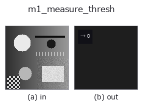

measure1d op• Data kinds: image → feature
• Call: fullseye.apply(img, "m1_measure_thresh", a=0.5, b=0.5) (2-D model = एक image + दो scalar knobs a,b∈[0,1])
• HALCON समकक्ष: measure_thresh (अर्थ और parameters समझने के लिए HALCON reference उपयोगी है)

*Figure synthetic 128×128 input पर सच में चलाकर मिला output है। बाईं ओर input, दाईं ओर output। Point clouds ऊपर से देखे गए scatter के रूप में (brightness = z), 1-D series line के रूप में, volumes z दिशा में maximum-intensity projection के रूप में, videos बीच के frame के रूप में, complex images amplitude के रूप में, और जो return values चित्र नहीं बन सकते वे स्वयं values के रूप में दिखाए जाते हैं।*
Knob a को बदलकर (0.1 / 0.5 / 0.9, दूसरा knob default पर):
▸ m1_measure_thresh: knob a को बदलने का figure (docs site)
Knob b को बदलकर (0.1 / 0.5 / 0.9, दूसरा knob default पर):
▸ m1_measure_thresh: knob b को बदलने का figure (docs site)
केंद्र से गुज़रने वाली caliper line पर brightness profile ने दिए गए level को कितनी बार पार किया, यह गिनता है (HALCON measure_thresh के समकक्ष: आयत/चाप के साथ खास gray value वाले points निकालना)।
> नीचे का विस्तृत विवरण मूल text में है — सारांश और headings का अनुवाद हो चुका है।
a は線の向き（theta = a*pi）、b はグレー値のしきい値レベル（0〜1、そのまま）。生のプロファイル（平滑化なし）がこのレベルをまたぐ回数を feature（整数値）として返す。線が画像に掛からない場合は 0.0。
• gallery2d_contour_measure family guide
• measurement_uncertainty — Measurement uncertainty और calibration — 'हम माप रहे हैं' कहने के लिए क्या चाहिए
• Sample data catalog (DL URL / license) — 2-D के लिए skimage.data (BSD/public) + synthetic, 3-D के लिए real data sources (Stanford/PDS आदि) के DL URL।
• Operators का स्रोत और संदर्भ — इस op family के मूल research/methods के स्रोत।
• Algorithm का मानक स्रोत (लेखक, वर्ष) और उपयोग ऊपर की family usage guide में दिए गए हैं।
नीचे का program सच में चलता है, यह जाँचा गया है (figure वाला ही input)। Studio की help में यह block buttons बन जाता है, जिनसे इसे वहीं load करके चलाया जा सकता है।
m1_measure_thresh 0.50 0.50
▸ यह pipeline load करें · Load करके चलाएँ
• gallery2d_contour_measure — py -3.11 examples/gallery2d_contour_measure.py
feature को input के रूप में लेते हैं)measure1d)m1_measure_projection · m1_measure_pos · m1_measure_pairs · m1_fuzzy_measure_pos
*Provenance: ops.py — 2D operator registry. यह per-op note tools/opdocs.py md से अपने-आप generate होता है (हाथ से edit न करें)।*
© 2026 Kazufumi Furuse — Fullseye operator documentation. Licensed under Apache-2.0.